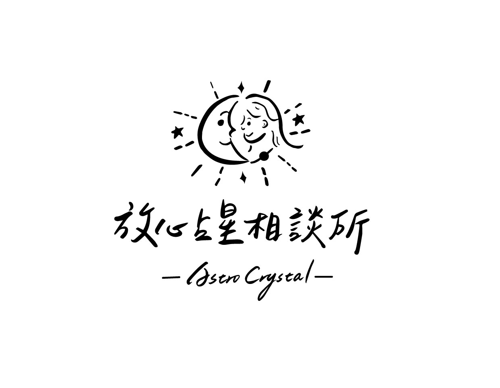

清楚而有系統
把星體、星座、宮位與技法整理成可理解、可練習的判讀架構。
MY PHILOSOPHY
透過古典占星真實了解自己；透過了解自己，得以身心平衡自由。星盤是一張人生地圖，而學習判讀的方法，是把方向感重新交回自己手上。
把星體、星座、宮位與技法整理成可理解、可練習的判讀架構。
不製造恐懼，不用單一答案限制人生，保留理解與行動的空間。
以同理心承接問題，也以紮實理論協助你看見真正的重點。

EXPERIENCE
START FROM HERE
告訴我你目前的狀況，我會協助你選擇適合的諮詢或學習方式。